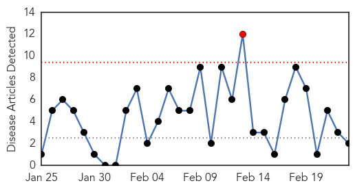
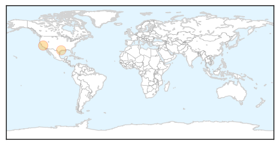
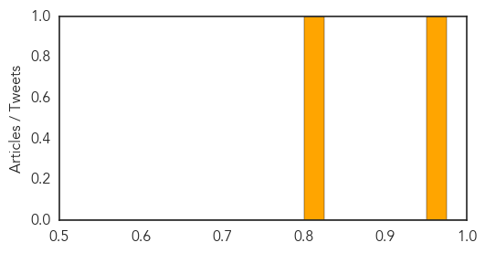
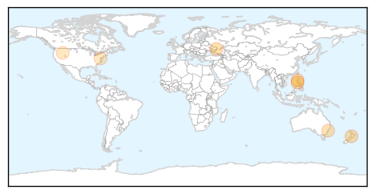

Meningitis
30-Day Web Trend
1 alerts, 0 warnings

30-Day Twitter Trend
0 alerts, 0 warnings

Article Locations
Article Confidences
Top Articles:
Top Tweets:
-
No tweets found for Feb 23, 2015
Influenza
30-Day Web Trend
0 alerts, 0 warnings

30-Day Twitter Trend
0 alerts, 0 warnings

Article Locations
Article Confidences

Top Articles:
- 0.990
- DOH: Filipino from China who showed bird flu symptoms dies
- 0.981
- ‘Bird flu, not Merscov, killed Pinoy in China’
- 0.939
- Humanitarian efforts increase as crisis in Ukraine continues
- 0.926
- Flu jabs to arrive later than usual
- 0.866
- Only About Children childcare centre worker develops tuberculosis
- 0.751
- February 23, 2015 Archives
- 0.751
- February 22, 2015 Archives
- 0.526
- No Bird Flu in Obasanjo’s Farms – Minister
Top Tweets:
-
No tweets found for Feb 23, 2015